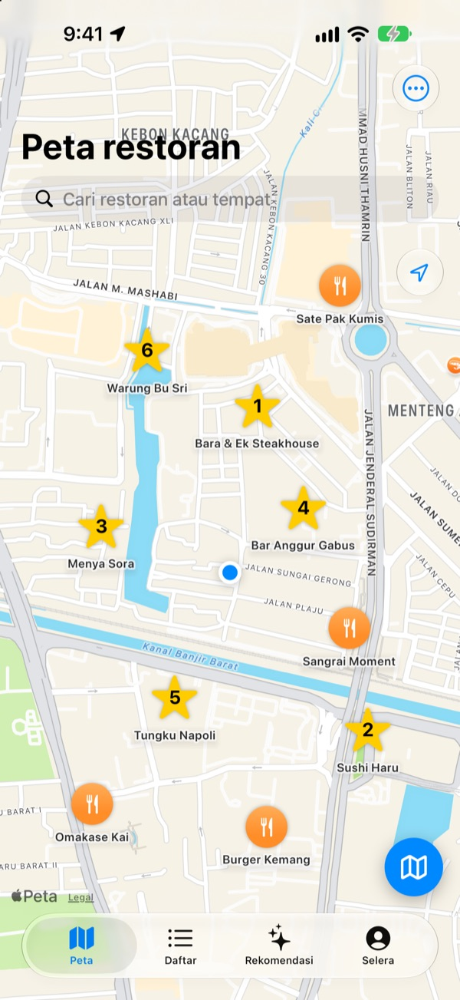
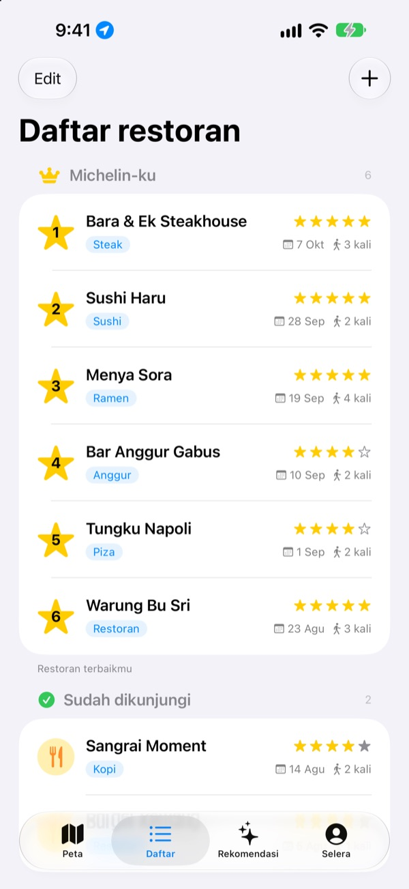
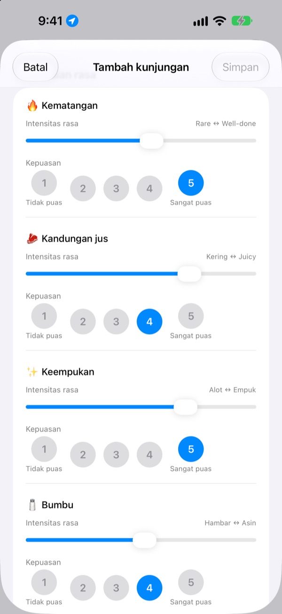
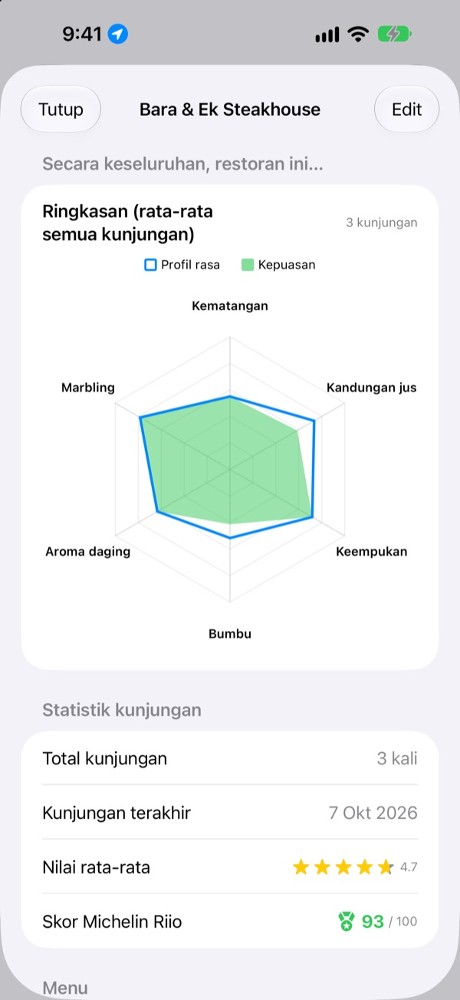

Tempat makan enak,
tak akan terlupa lagi
Tandai di peta restoran yang sudah kamu datangi dan yang ingin dicoba, lalu setiap kunjungan catat menu yang dipesan, foto, dan rasanya. Saat bingung mau makan di mana, catatanmu sendiri punya jawabannya.
Semua fitur gratis. Tanpa daftar akun, catatan tetap di iPhone-mu.

Coba nilai satu hidangan
Pilih jenis makanan, lalu atur seberapa kuat tiap rasa dan seberapa kamu suka. Kriteria dan perhitungannya sama dengan kunjungan di aplikasi.
Tempat itu enak, tapi dulu pesan apa, ya?
Kamu ingat restoran itu enak, tapi namanya samar, dan apa yang dipesan atau apakah kuahnya keasinan sudah lupa sama sekali. Akhirnya cari lagi dan baca ulasan orang lain. Insaeng menyimpan apa yang kamu cicipi sendiri di peta, supaya pilihan berikutnya berdasarkan pengalamanmu.
Sudah dikunjungi, Ingin ke sana, dan Michelin-mu sendiri
Cari di peta atau ketuk tempat terdekat, langsung tersimpan. Pisahkan tempat yang sudah didatangi dari yang ingin dicoba, dan urutkan enam favoritmu dari 1 sampai 6.
Kalau ada yang minta rekomendasi, tinggal tunjukkan daftarnya.

Pertanyaan yang cocok dengan hidangannya
Seberapa kuat tiap rasa, seperti pedas atau asin, diatur dengan penggeser, dan seberapa kamu suka dinilai terpisah dari 1 sampai 5. Steak soal tingkat kematangan dan juiciness, sushi soal nasi dan ikan, ramen soal kuah dan mi.
Setiap kunjungan juga menyimpan menu, foto, bintang, dan catatan.

Tempat yang layak didatangi lagi, terlihat dari angka
Setelah beberapa kunjungan, tiap restoran menampilkan ringkasan dari rata-rata semua kunjungan dan Skor Michelin Riio dari 100 yang menggabungkan bintang dan kepuasan.
Saat kamu meninggalkan restoran yang tersimpan, tak lama kemudian muncul pengingat untuk mencatat kunjungan.

Mulai dalam tiga langkah
- 1
Simpan restoran
Cari di peta atau ketuk tempat terdekat.
- 2
Catat kunjunganmu
Menu, foto, bintang, dan rasa. Penilaian rasa boleh dilewati.
- 3
Pilih tujuan berikutnya
Lihat Top 6 dan skornya, lalu buka rute di Apple Maps, Kakao Map, atau Naver Map.
Yang dinilai untuk tiap jenis makanan
- 🍽️ Umum
- Kepedasan, Kekuatan rasa, Rasa manis, Rasa asin, Gurih, Rasa alami
- 🥩 Steak
- Kematangan, Kandungan jus, Keempukan, Bumbu, Aroma daging, Marbling
- 🍣 Sushi
- Shari (nasi), Neta (topping), Wasabi, Keseimbangan, Kepalan, Suhu
- 🍜 Ramen
- Kuah, Mi, Chashu, Topping, Suhu, Keseimbangan
- 🍕 Piza
- Adonan, Saus, Keju, Kematangan, Topping, Keseimbangan
- 🍷 Anggur
- Kekentalan, Tanin, Keasaman, Aroma, Akhir rasa, Keseimbangan
- ☕ Kopi
- Keasaman, Kekentalan, Cita rasa, Sisa rasa, Rasa manis, Keseimbangan
Makanan lain dinilai dengan kriteria umum di baris pertama. Kamu juga bisa membuat kategori sendiri.
Pertanyaan umum
Bagaimana cara menambahkan restoran?
Ketik nama restoran di kolom pencarian di bagian atas peta, lalu ketuk “Tambahkan ke restoranku” di hasil pencarian. Kamu juga bisa langsung menambahkannya dengan mengetuk tempat di sekitar yang terlihat di peta. Kalau tempatnya tidak muncul di pencarian, tambahkan sendiri di lokasimu saat ini atau di titik yang kamu pilih di peta.
Apa itu Sudah dikunjungi, Ingin ke sana, dan Top 6?
Sudah dikunjungi – restoran yang sudah pernah kamu datangi. Kamu bisa mencatat kunjungannya. Ingin ke sana – restoran yang ingin kamu coba suatu hari nanti. Setelah berkunjung, ubah menjadi Sudah dikunjungi di halaman detail restoran. Top 6 (Michelin-ku) – enam restoran paling favoritmu dengan peringkat 1 sampai 6. Restoran di daftar Ingin ke sana tidak bisa dimasukkan ke Top 6.
Apakah penilaian rasa wajib diisi?
Tidak, itu opsional. Kalau dinilai, intensitas rasa dan kepuasan masuk ke ringkasan restoran dan dihitung dalam Skor Michelin Riio.
Kapan notifikasi “Bagaimana kunjunganmu hari ini?” muncul?
Kalau kamu berada di dekat restoran yang tersimpan lebih dari 5 menit lalu pergi, notifikasi muncul sekitar 40 menit kemudian. Fitur ini memerlukan izin lokasi “Selalu” dan izin notifikasi. Kalau tidak ingin menerima notifikasi, matikan notifikasi di Pengaturan > Aplikasi > Insaeng, atau ubah lokasi menjadi “Saat Menggunakan App”. Pengecekan lokasi hanya dilakukan di perangkat. Rute perjalananmu tidak disimpan dan tidak dikirim ke mana pun.
Apakah aplikasi bisa dipakai tanpa izin lokasi?
Bisa. Kamu bisa memilih titik sendiri di peta untuk menambahkan restoran dan mencatat kunjungan. Hanya tampilan lokasi saat ini dan pengingat setelah berkunjung yang tidak bisa dipakai.
Hasil pencarian tempat tidak muncul
Pencarian tempat memerlukan koneksi internet. Coba cari lagi dengan nama lain atau kata kunci yang lebih pendek. Kalau tetap tidak ada, pilih titik di peta dan tambahkan sendiri.
Di mana catatanku disimpan? Apakah tersinkron dengan perangkat lain?
Restoran, catatan kunjungan, dan foto hanya tersimpan di iPhone ini. Versi saat ini belum mendukung sinkronisasi dengan perangkat lain, dan fitur cadangkan dan pulihkan iCloud di pengaturan juga belum berfungsi. Namun, data aplikasi ikut tersimpan dalam cadangan iPhone secara keseluruhan (cadangan iCloud atau cadangan di komputer).
Aku ingin menghapus semua catatan
Ketuk “Hapus semua data” di pengaturan layar peta, maka restoran dan catatan kunjungan akan terhapus. Tindakan ini tidak dapat dibatalkan, jadi hati-hati. Untuk menghapus foto juga tanpa sisa, hapus aplikasinya.
Kalau aplikasi dihapus lalu dipasang lagi, apakah catatanku masih ada?
Tidak. Catatan hanya tersimpan di perangkat, jadi ikut terhapus saat aplikasi dihapus. Pastikan dulu sebelum menghapus aplikasi.
Benar semuanya gratis?
Benar. Semua fitur gratis, tanpa iklan dan tanpa akun. “Dukung Pengembang” di pengaturan sepenuhnya opsional dan tidak membuka fitur tambahan.
Kalau jawabannya tidak ada di atas, kirim pesan langsung dari aplikasi di Pengaturan > Dukungan, atau kirim email ke mizzking75@gmail.com. Sertakan versi aplikasi, model iPhone, serta apa yang kamu lakukan di layar mana, supaya kami bisa mengeceknya lebih cepat.